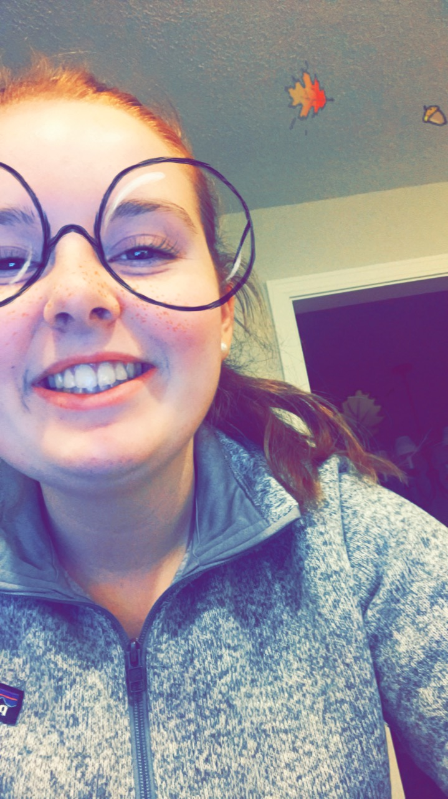

Sophia McAvoy
4 Oxbow Road Medfield, MA 02052
scmcavoy2021@email.medfield.net
617-470-0032
Age: 14 July 16, 2003
Sophia McAvoy's Resume

Job and Leadership Experience:
- Assistant Coach for Learn to Skate at Norfolk Arena Norfolk, MA
Every Sunday for 100+ hours
- Camp Counslor at Woodside Montessori Academy's summer camp located in Millis, MA 02054
100+ hours
- Three day intership at Off the Leash doggy day care located in Attleboro, MA
- Vice President of the New England Skating Club's Junior board
100+ hours
- Tresurer of Medfield High School's Figure Skating Club
- Mentor of Woodside Montessori Academy's FLL robotics team; The Lego Eaters
Out of 100 teams, The Lego Eaters were able to make it to the state championships at WPI in Worcester, MA after placing in the top 12 for their robot game and presntation.
Academic Acheivements
- I currently have a unweighted GPA of 3.98
- I will be taking U.S. 1 Honors History Next Year
- I can code in Java Script and some HTML
- Can use Adobe Photoshop and and Adobe Illustrator
Extra Curricular Activites
Most of my time is spent on the sport of figure skating. I have passed the Intermediate Moves in the Field and the Pre-Preliminary Freestyle tests. I have been involed in an Open Juvenile Synchronized Skating team, and I am continuing with the team this year. Over the past two years, my team and I have traveled to Fort Meyers, Florida and Hersey, Pennsylvania for the Synchronized Skating Eastern Sectional championships. In 2017, my team and I came in the top four of our competitive group and were able to make it to the final round to compete with the best teams in the East Coast.
Also, on my freetime, I volunteer my time to the New England Skating Club. I do small things such as collecting money for icetime every Wednesday, and for big things such as car wash fundraisers or social activites for the club.
In February of 2018, I was one of three chosen, for the first time at our club, for U.S. Figure Skating Get Up award for my perserverence and hard work.